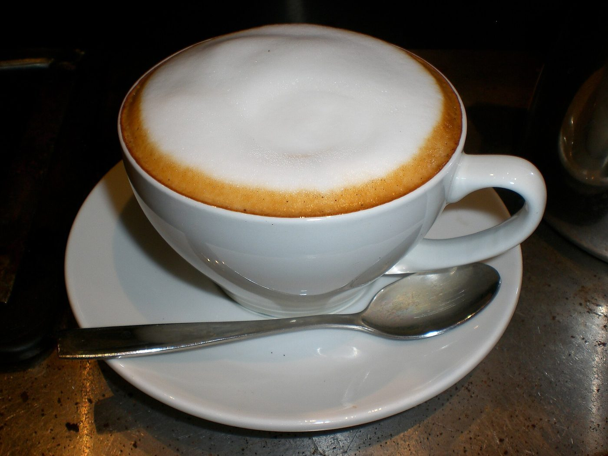
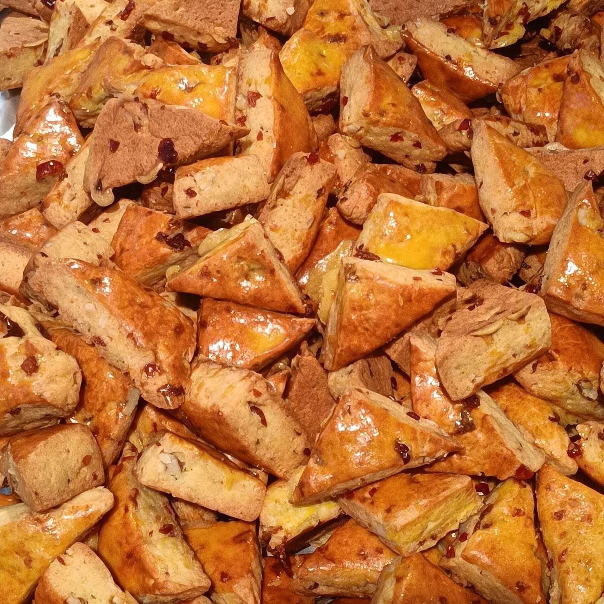
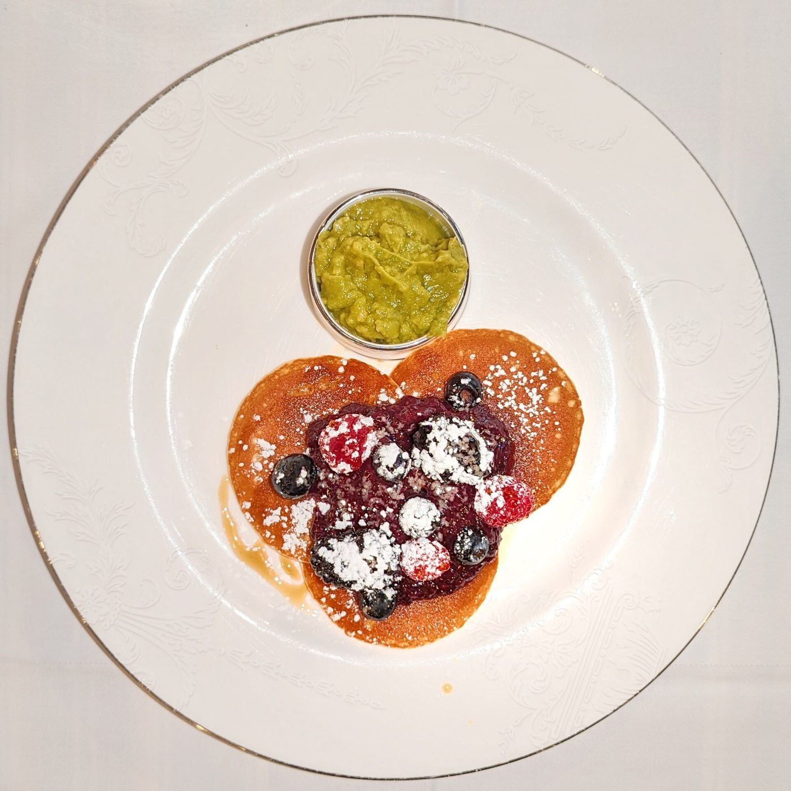
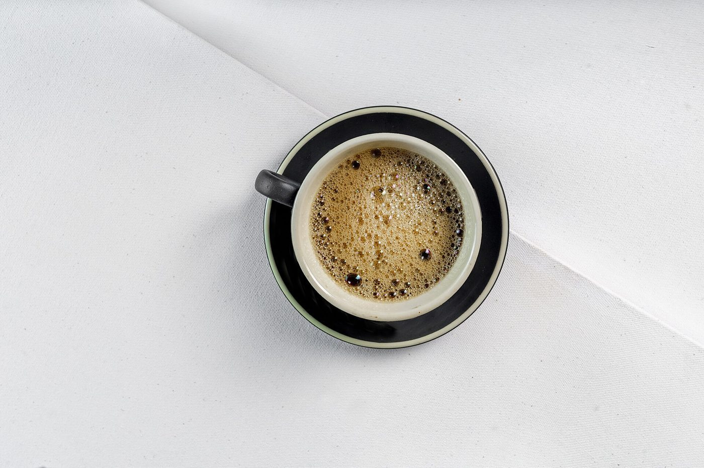

制作側の連想
トランジスタの部位を、配置図にしてみる
このサイトは、手のひらに載る黒くて小さな電子部品「トランジスタ」を図にしたつもりで作りました。六つの部位に番号をふり、上の図と並べています。制作側の連想で、お店の理念・由来とは無関係です。実際の部品の仕様・規格を示すものでもありません。
凡例
六つの部位
- 1樹脂パッケージ中の小さな素子を包んで守る、黒い半円柱状の外装。
- 2刻印面型番などを印字する、平らな正面。
- 3丸い背刻印面の裏側にふくらむ、まるい曲面。
- 4エミッタ脚三本脚の一本。電流の出口側につながる。
- 5ベース脚三本脚の一本。電流の出入りを加減する、制御側につながる。
- 6コレクタ脚三本脚の一本。電流の入口側につながる。
脚の並び順は部品の型番によって異なります。図は説明用の一例です。
ギャラリー(イメージ)
カフェの定番、パンとコーヒーの写真




写真はカフェのイメージです。お店のものではなく、お店で提供している商品を示すものでもありません。
ご案内
お店のこと(確認できたものだけ)
| 所在地 | 〒633-0014 奈良県桜井市粟原１０８７−１９ |
|---|---|
| 電話 | 準備中 |
| 営業時間 | 準備中 |
| 定休日 | 準備中 |
| ご予約 | 準備中 |
| 駐車場 | 準備中 |
| SNS | Instagram @morinocafe_haruka |
ギャラリー(イメージ)
甘いものと一杯の写真



写真はイメージです。お店のメニューを示すものではありません。